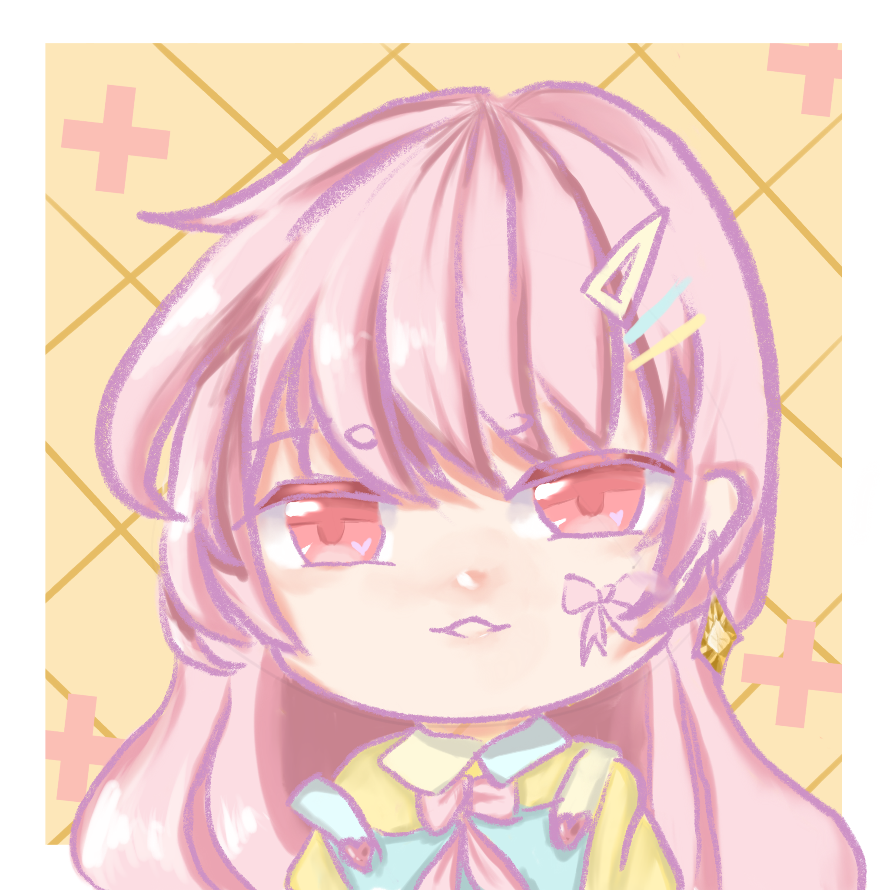

作品一 粉色人物
作品類型 電繪 以粉色的色調來進行整體的搭配，算是一個普通的人設，很難想像如此普通的人設，也要有了設計的理念，算是自由塗鴉，設計理念少之又少，因為喜歡粉嫩的顏色所以使用了粉色，因為喜歡畫人就畫人，因為覺得搭配吊帶會很可愛，所以用了，這也許代表我覺得不應該對每件作品，有限制字數，它可以是很簡單的產物，我希望繪畫的本質就是由喜歡而去進行。
作品類型 電繪 以粉色的色調來進行整體的搭配，算是一個普通的人設，很難想像如此普通的人設，也要有了設計的理念，算是自由塗鴉，設計理念少之又少，因為喜歡粉嫩的顏色所以使用了粉色，因為喜歡畫人就畫人，因為覺得搭配吊帶會很可愛，所以用了，這也許代表我覺得不應該對每件作品，有限制字數，它可以是很簡單的產物，我希望繪畫的本質就是由喜歡而去進行。